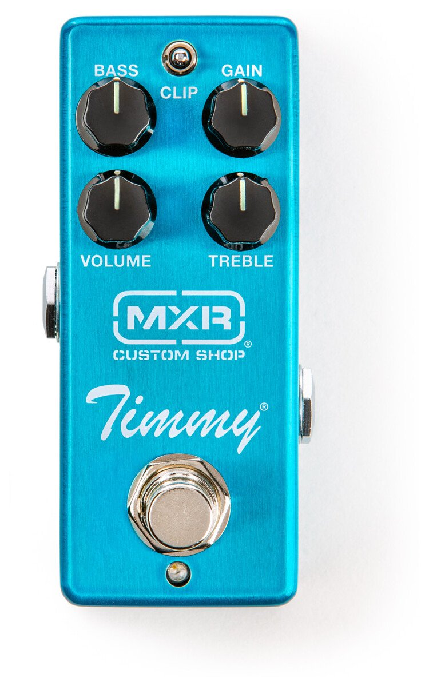
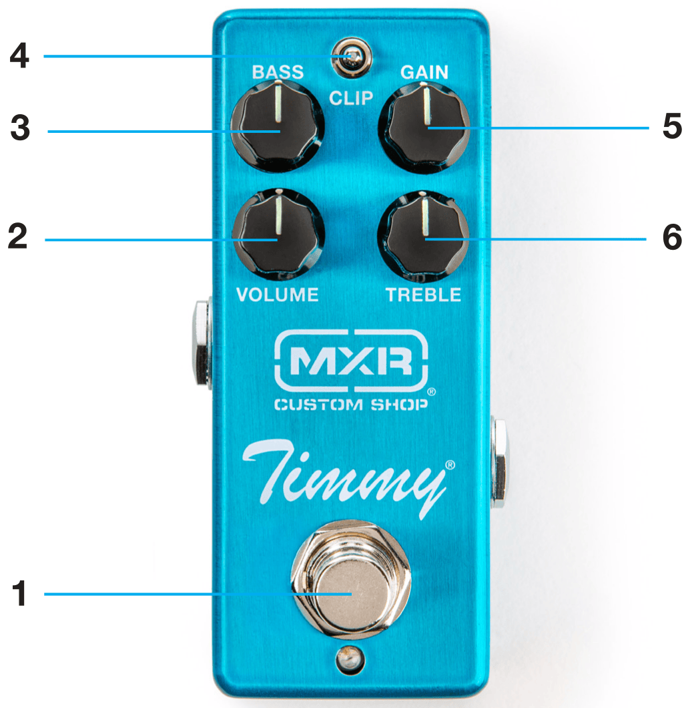

CSP027
Timmy® Overdrive

Welcome
The Timmy Overdrive provides a versatile range of overdrive tones that enhance the natural sound of your guitar and amp setup. With three different clipping options and ingeniously configured Bass and Treble controls, this pedal offers players a ton of options to make the most of their playing and recording experience.
External Controls

- FOOTSWITCH toggles effect on/bypass (blue LED indicates on)
- VOLUME knob adjusts overall volume of effect
- BASS knob cuts low end frequencies from pre-overdrive signal
- CLIP switch sets clipping mode
- GAIN knob adjusts overdrive intensity
- TREBLE knob cuts high end frequencies from post-overdrive signal
Basic Operation
Power
The Timmy® Overdrive is powered by the Dunlop ECB003 9-volt adapter, or the DC Brick™, Iso-Brick™, and Mini Iso-Brick™ power supplies. This pedal cannot be powered by a battery.
Directions
- Run a cable from your guitar to CSP027’s INPUT jack and another cable from CSP027’s OUTPUT jack to your amplifier.
- Start with VOLUME and GAIN controls at 12 o’clock and BASS and TREBLE controls fully clockwise.
- Turn effect on by depressing the footswitch.
-
Use CLIP switch to select your preferred clipping style:
The Left position provides asymmetrical clipping with moderate saturation and slight compression for a wide, dynamic range of sounds.
The Middle position provides symmetrical clipping with light saturation, high headroom, and high definition for a big sound.
The Right position provides symmetrical clipping with heavy saturation and low headroom.
- Rotate VOLUME knob clockwise to increase overall volume or counterclockwise to decrease it.
- Rotate GAIN knob clockwise to increase overdrive intensity or counterclockwise to decrease it.
- Rotate BASS knob counterclockwise to reduce bass frequencies to your taste.
- Rotate TREBLE knob counterclockwise to reduce high frequencies to your taste.
Specifications
| Input Impedance | 400 kΩ |
|---|---|
| Output Impedance* | 1 kΩ |
| Noise Floor* | -115 dBV |
| Gain | 3 dBV to 43 dBV |
| Bypass | True Hardwire |
| Current Draw | 2.2 mA |
| Power Supply | 9 volts DC |
Measurements made at 1 kHz
*All controls at mid-position, A-weighted